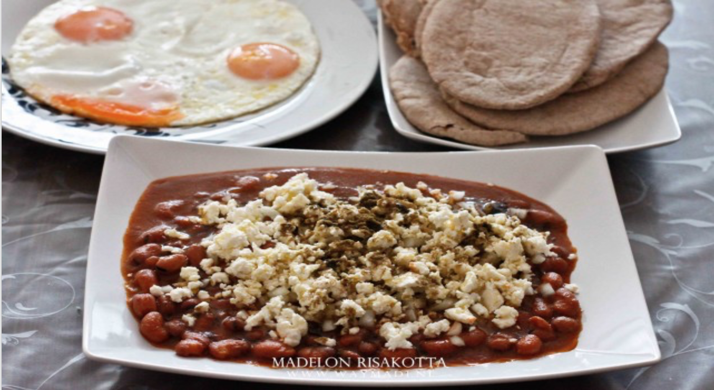
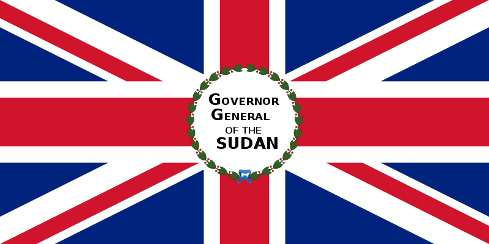
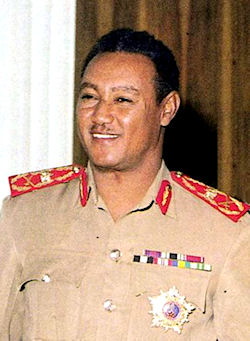
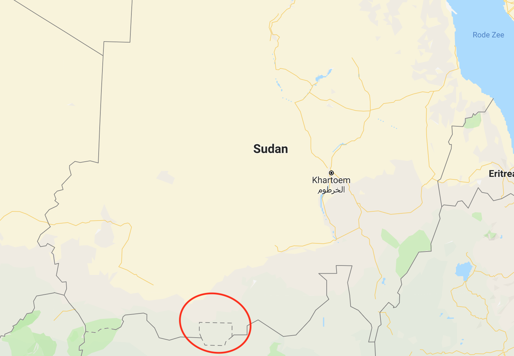
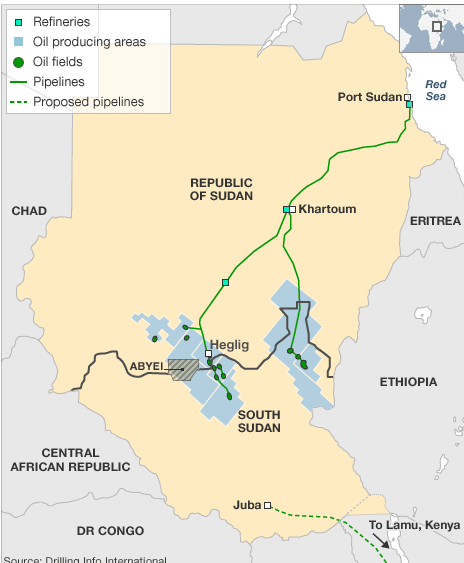
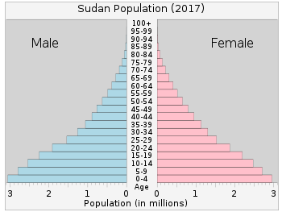

Sudan
Amir, Midas, Matthias en Jochem
https://tinyurl.com/sudanmetis

Spelers: 0
Cultuur
- Taal: Arabisch
- Hoofdstad: Khartoem
- Geloven: Islam en Christendom
- Mannen westers gekleed.
- vrouwen vaak in djellaba's.
- 1 januari dag van de onafhankelijkheid.
- Nationaal gerecht: foel (warme bruine bonen)
- 40,53 miljoen inwoners

Geschiedenis
- Sudan als kolonie
- Onafhankelijkheid
- Leger
- Weer een staatsgreep
Van welk land was Sudan een kolonie?
Ga!Van welk land was Sudan een kolonie?
A Nederland
B Engeland
C Duitsland
D Zimbabwe
Antwoord >B Engeland
Sudan onder de Britten
- 1898 Sudan van Britten
- Islam
- 10° tot 8°
- Scheur
- 1956 Sudan onafhankelijk
- NUP (Nationale Unie Partij; federalistisch)

Onafhankelijkheid
- Regering faalde
- Zuidelijke opstand
- 1958 Staatsgreep generaal Ibrahim Abboud
- Zuid-Sudan Ontevreden
Staatsgrepen
- Regering weer gefaald
- 1969 Staatsgreep Jafaar Numeiri
- 1971 Staatsgreep communistisch gezinde Babiker al-Nur Osman
- 1972 Numeiri neemt weer over en Zuid-Sudan autonome regering
- Numeiri maakt grondwet Noord-Sudan
- Dictator
- Islam

Jafaar Numeiri
Jafaar Numeiri
1983 - 1996
- 1983 Numeiri werd Imam
- Weer spanningen tussen Zuid en Noord
- 1985 Democratie
- 1989 een militaire coup onder leiding van al-Bashir
1996 - heden
- 2003 Burgeroorlog in Darfur begint
- 2011 Zuid-sudan wordt souverijn
- heden: nog steeds conflict over gebied rond Abyei (Olieveld) tussen Noord en Zuid

Conflicten
- Interne conflicten
- Zuid-Sudan
- Darfur
- Abyei
Uitdagningen
- Verwoestijning
- Olie
- Vrouwenbesnijdenis
Verwoestijning
- In het zuiden nog savannes en regenwouden
- Steeds meer woestijn en steppes
- Minder diersoorten
- Kleiner leefgebied
- Makkelijker voor stropers
- Houtkap en overexploitatie

Olie
- Grote inkomstenbron
- Vooraden worden kleiner
- Problemen in de toekomst

Vrouwen-besnijdenis
- De externe geslachtsorganen weghalen
- Schaamlippen en vaak de clitoris
- Achtjarigen
- Veel meisjes overlijden hierdoor

Economie
- Algemeen
- Import / Export
Algemeen
- Soedanese pond (SDG)
- Eén euro is gelijk aan 50 Soedanese pond.
- 110 grootste exportland in de wereld
- Export: 4,7 miljard dollar
- Import: 9,9 miljard dollar
Exportbestemmingen
- Verenigde Arabisch Emiraten 37%
- China & Saudi Arabie 13%
- India 9.5%
- Egypte 8.5%
Wat IMporteert Sudan het meest?
Ga!Wat IMporteert Sudan het meest?
A Aardolie
B Zijden
C Tarwe
D Suiker
Antwoord >C Tarwe
Wat EXporteert Sudan het meest?
Ga!Wat EXporteert Sudan het meest?
A Wapens
B Goud
C Zand
D Aardolie
Antwoord >B Goud
Import & Export
Import
- Tarwe 9.9%
- Aardolieproducten 7.3%
- Ruwe suiker 4.3%
- Geneesmiddelen 2.7%
Export
- Goud 32%
- Ruwe aardolie 15%
- Schapen en geiten 10%%
- Katoen 2,6%
Demografie
- Arm land
- Veel kinderen weinig ouderen
- 2,4% bevolkingsgroei

Met wie handelt Sudan het meest?
Ga!Met wie handelt Sudan het meest?
A China
B Djibouti
C Congo-Kinshasa
D Verenigde Arabische Emiraten
Antwoord >D Verenigde Arabische Emiraten
Waarover was Sudan laatst in het nieuws?
Ga!Waarover was Sudan laatst in het nieuws?
A Ontploffing in mijn
B Demonstratie tegen regering
C Olieveld droogt op
D Oorlog met Zimbabwe
Antwoord >B Demonstratie tegen regering
Evaluatie
- Taakverdeling
- Planning
- Samenwerking